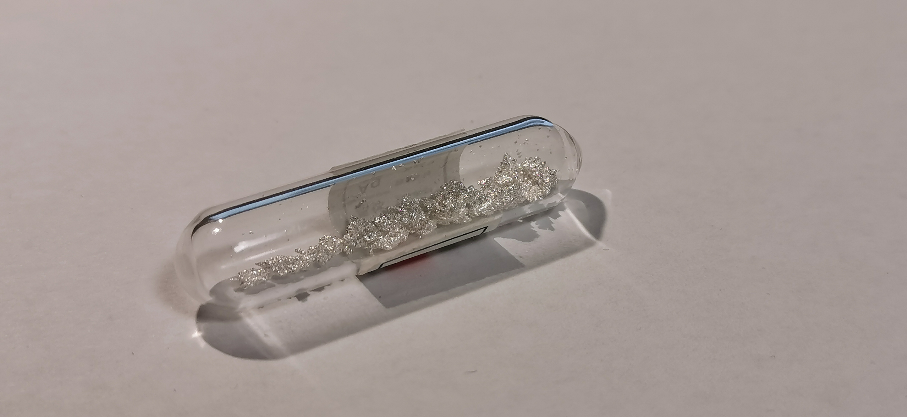
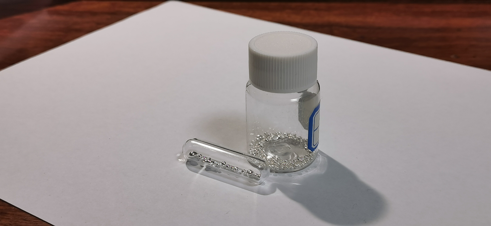

银
2019.4 电解银晶体 99.99% 来自冥灵 
由来：这支银晶体勾起了我一段往事。四月，我购买这管银晶体打算送给初中一位同学作为生日礼物，然而我好像忘记把它从裤兜里拿出来，而使本是一支完整的树状晶体的它遭受了这辈子最难熬的酷刑。可以从图中看出，后来又遭受了一些折磨后，这管银晶体现在已经是碎末一堆了。当时由于碎末不美观，我又购买了一管送给那个同学，这管碎末就被我留下了。
2020.1 银粒 99.99% 来自冥灵 
银粒：这是5g普普通通的银粒，为了实验准备。
由来：这支银晶体勾起了我一段往事。四月，我购买这管银晶体打算送给初中一位同学作为生日礼物，然而我好像忘记把它从裤兜里拿出来，而使本是一支完整的树状晶体的它遭受了这辈子最难熬的酷刑。可以从图中看出，后来又遭受了一些折磨后，这管银晶体现在已经是碎末一堆了。当时由于碎末不美观，我又购买了一管送给那个同学，这管碎末就被我留下了。
银粒：这是5g普普通通的银粒，为了实验准备。